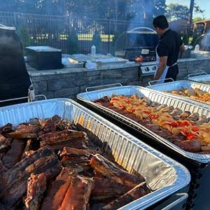

My name is Miguel G, and I am completely obsessed with the art of low and slow barbecue. What started years ago as a simple weekend hobby with a basic kettle grill quickly turned into a lifelong passion for wood smoke, perfectly balanced rubs, and the pursuit of the ultimate bark. For me, BBQ is about more than just great food, it’s about community.
There is nothing better than spending 12 hours tending a fire, knowing that a crowd of family and friends will be gathering around the table at the end of the day. On this site, I’m sharing everything I’ve learned along the way: my favorite recipes, honest gear reviews, and the backyard tips that will help you master your own smoker.Grab a cold drink, stoke the fire, and let's make something delicious.
